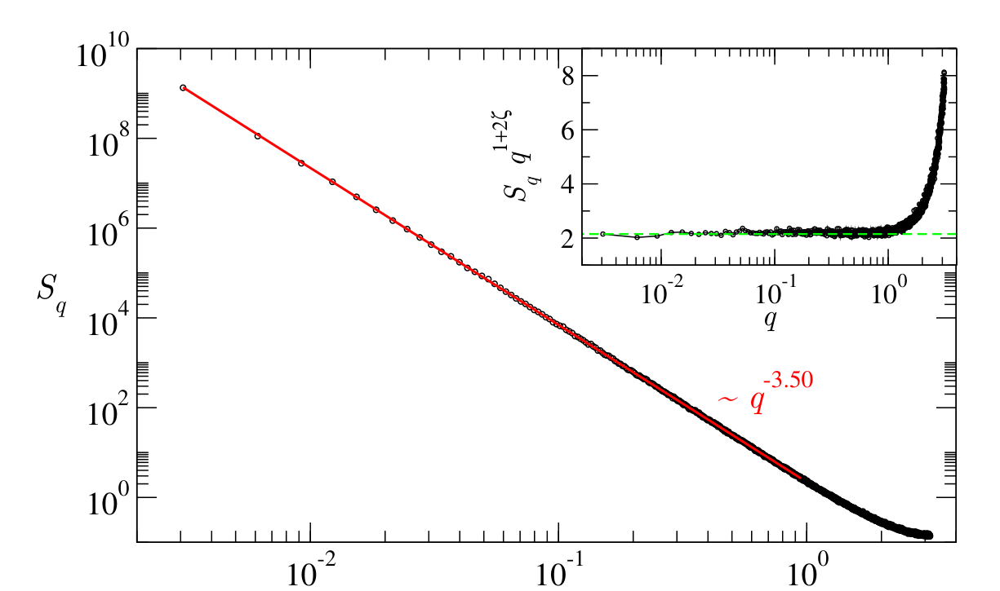
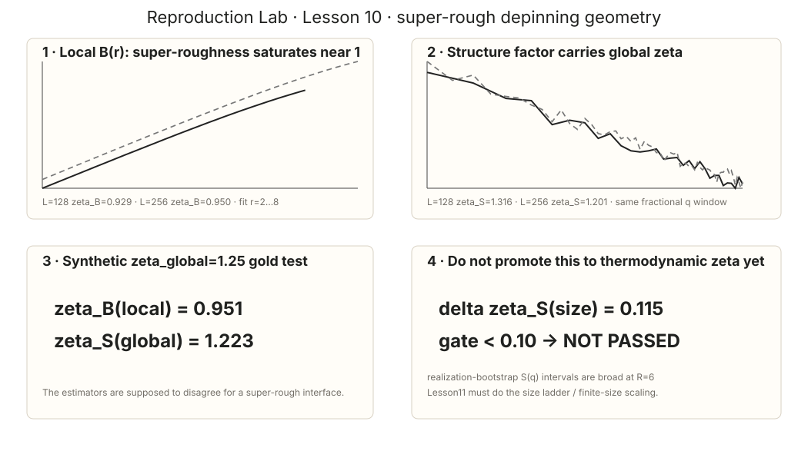

Learning Sliding Ferroelectricity / Reproduction Lab / Lesson 10
Paper2-orientedsource ↔ estimator mapping
论文 Fig.1 测 S(q)，我们也测 S(q)：这一次是直接 observable 对齐
旧页面把 critical structure factor 错标成 Ferrero Fig.4(a)，导致你根本无法从论文反查。现在恢复真实 Figure 身份，并把 S(q) 这一条直接可比关系放在页面最前面；B(r) 只作为额外 local diagnostic。
L10 是 L07–L12 里最应该“图对图”的一课：论文真正的 critical-configuration structure factor 是 PRE 2013 Fig.1，不是旧页面写的 Fig.4(a)。论文和我们都在测 S(q)，并从低 q 斜率读取 global roughness ζ。
0 · 论文原图：critical configuration 的 S(q)

S(q)\sim q^{-(1+2\zeta)}
| 论文 Fig.1 | 本课 | |
|---|---|---|
| 横轴 | q | q |
| 纵轴 | S(q) | S(q) |
| 读出的量 | global ζ | global ζS |
| 额外诊断 | rescaled inset / lattice crossover | B(r) local exponent + cross-size drift |
1 · 为什么我们的 B(r)≈1 和 S(q)>1 不矛盾？
super-rough interface 的 global ζ>1 时，local height-difference exponent 会饱和到约 1，而 structure factor 仍携带 global ζ。因此本课首先用 synthetic ζglobal=1.25 interface 验证 estimator 应该“分裂”，不是强迫二者相等。

| L | ζB,local | ζS,global |
|---|---|---|
| 128 | 0.928961 | 1.315621 |
| 256 | 0.949576 | 1.201060 |
SMALL-QEW SUPER-ROUGH SIGNATURE PASS。 local≈1、global>1 的 estimator structure 与 super-rough depinning 相容。
THERMODYNAMIC ζ CLOSURE NOT PASSED。 |ζS(128)−ζS(256)|=0.114561 > 0.10。不能只挑 1.316 或 1.201 说“接近 1.25”。
2 · 这里和论文到底相关到什么程度？
强相关：同一 observable、同一 scaling form、同样关注低 q 的 global geometry。
仍不能直接复现：论文用更大系统和 exact critical configurations；我们的 small-QEW disorder generator、尺寸与 sample 数不同，因此不比较点的绝对位置，也不把当前 ζ 当作 thermodynamic benchmark reproduction。